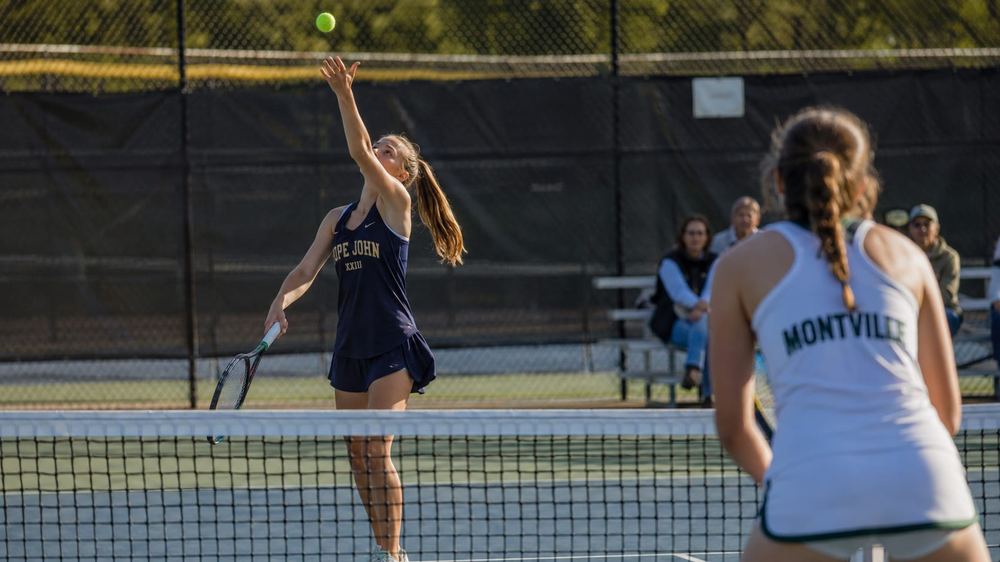

Governing bodies, professional associations and the platforms NJAC schools use day to day.
New Jersey State Interscholastic Athletic Association — the official governing body for high school athletics in New Jersey.
njsiaa.orgThe academic and transfer standards every NJSIAA member school competes under.
njsiaa.org/eligibilityPhysicals, consent, transfer and tournament paperwork.
njsiaa.org/formsNational Federation of State High School Associations — the national governing body for high school sports.
nfhs.orgAnnual rule changes, points of emphasis and situational plays, sport by sport.
nfhs.orgDirectors of Athletics Association of New Jersey — the professional organization for athletic directors in the state.
daanj.orgNational Interscholastic Athletic Administrators Association — professional development and certification for athletic administrators.
niaaa.orgThe scheduling platform many NJAC schools use for schedule management and communication. This site reads those schedules directly.
arbiterlive.comLive and on-demand streaming of high school events. NJAC broadcasts appear under NJAC Vision.
nfhsnetwork.com